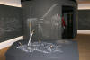
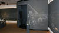
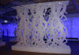
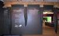
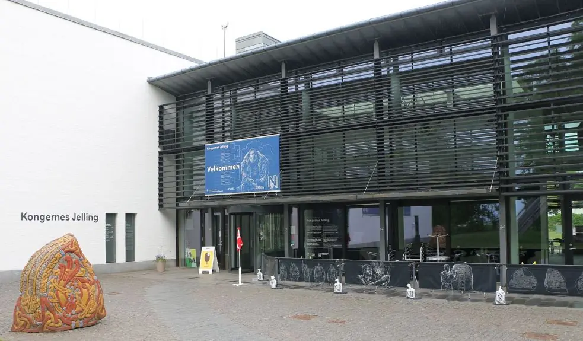
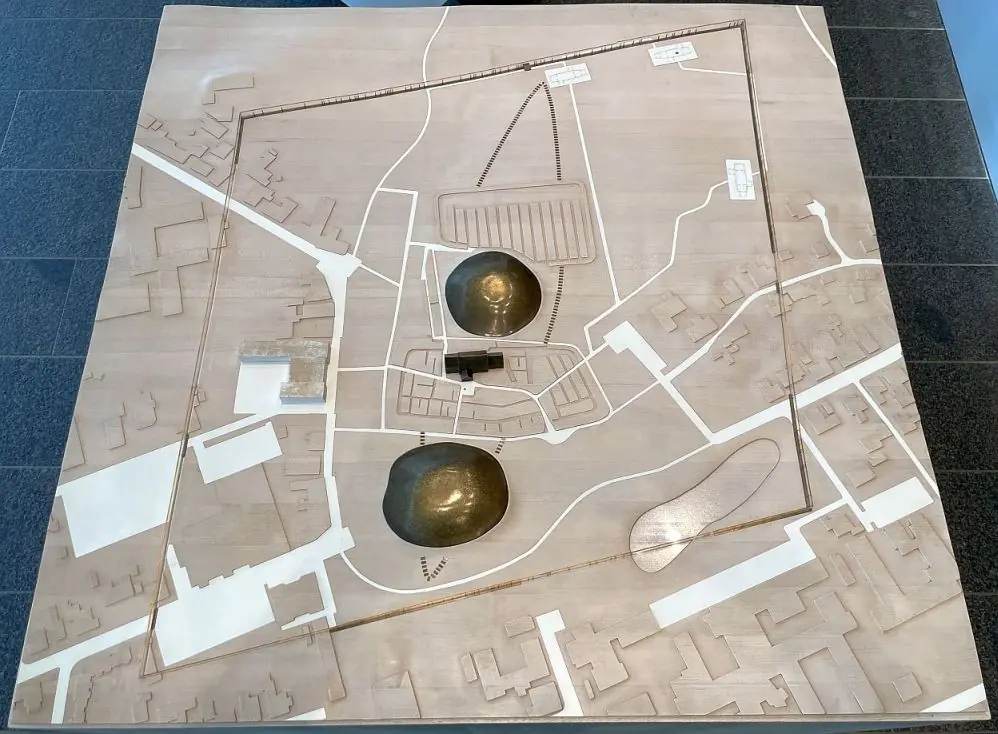

Museum - Kongernes Jelling (Das Jelling der Könige) - Letztes Update 06.10.2025
Navidaten: 55.7568165 9.4181893 oder: Gormsgade 23, 7300 Jelling
Das Erlebniscenter Kongernes Jelling wurde am 04.06.2015 wiedereröffnet. Das weiß ich deshalb so genau, weil ich an dem Tag dem Museum einen Besuch abstatten wollte und dabei über den Hintereingang zufällig in die Eröffnungsveranstaltung gestolpert bin! Ich hatte meinen Foto umhängen und fiel überhaupt nicht unter den vielen Gästen / Journalisten auf. Diverse mir bekannte Personen, so z.B. Anne Pedersen - Mads Kähler Holst - waren zugegen. Der damalige Museumschef (2000-2019) - Hans Ole Mathiessen - führte durch die Veranstaltung. Dem gemeinsamen Rundgang durch die neue Ausstellung, der so gegen 13.00 Uhr stattfand, habe ich mich aber nicht angeschlossen.
Zuvor war die vorhandene Ausstellung nahezu komplett umgestaltet worden. Es wurden die in den zurückliegenden Jahren erlangten neuen Erkenntnisse - Einzäunung durch gigantische Holzpalisade - Bohrproben der Grabhügel - Fund von Trellborg-Häusern - Ausmaße der Schiffssetzung - usw. eingearbeitet und eine Dachterrasse mit direktem Blick auf die Jelling Monumente eröffnet (siehe Panoramafoto im linken Frame). Dort ist auch ein modernes Fernglas installiert, durch das man auf das Jelling vor 1000 Jahren sieht.

Die neue Ausstellung bietet eine einzigartige digitale Sinneserfahrung, um den Besuchern das Leben der Wikinger näherzubringen. Es kann angefasst, gefühlt und mitgezittert werden, wenn das Leben der Wikinger präsentiert wird. Kommen Sie mit auf eine Reise zu Geschichten im Feuerschein, dem Leben als Wikinger und Krieger, dem Einzug in Walhalla bis hin zum Übergang zum Christentum. Aber ich persönlich fand die frühere Ausstellung viel ansprechender!
   


Zuvor war am 03.12.2000, 14 Uhr, der neue Museumsbau - Kongernes Jelling - in direkter Nachbarschaft, westlich der Jelling Monumente, durch ihre Majestät Königin Margrethe von Dänemark und die dänischen Kultusministerin, Elsebeth Gerner Nielsen, eröffnet worden. Dieses Museum wurde durch verschiedene private und staatliche Geldgeber möglich und kostete insgesamt 65.180.000 Dkr (ca. 17 Millionen DM). Auf einer Fläche von 2100 m², verteilt auf 3 Stockwerke, wird hier die Geschichte der Monumente in Jelling, deren Entstehungsgeschichte und deren Bedeutung für die Geschichte Dänemarks vermittelt. In Kongernes Jelling ist eine Dauerausstellung mit Funden aus den Ausgrabungen in Jelling und Modellen, die den Aufbau der Hügel und der Kirche veranschaulichen, sowie einer Beschreibung der Rolle der Monumente in der Geschichte Dänemarks zu sehen. Außerdem umfasst das Haus einen Versammlungssaal, ein Café mit einem Atriumgarten, sowie Platz für Sonderausstellungen mit wechselnden Themen (z.Zt. über die Arbeiten zur neuen Ausschmückung der Kirche von Jelling). Das Ausstellungsgebäude wurde nach einem Entwurf von Architekt Claus Wohlert, Wohlert Arkitekter AS, aufgeführt.
Die Jelling Monumente wurden 1994 in die UNESCO Welterbe Liste aufgenommen, worüber diese Urkunde Zeugnis ablegt.

Die Homepage des Museums ist über www.KongernesJelling.dk erreichbar (Dänisch/Englisch).
| Museumsanschrift: | Kongernes Jelling |
| Gormsgade 23 | |
| 7300 Jelling | |
| Tel. +45 4120 6331 |
Infomationsseite - in deutscher Sprache - mit allem Nützlichem wie z.B. Öffnungszeiten usw.
Der Eintritt ist frei.


Hintereingang und Modell in den Ausstellungsräumen - Aufnahme vom 17.06.2022